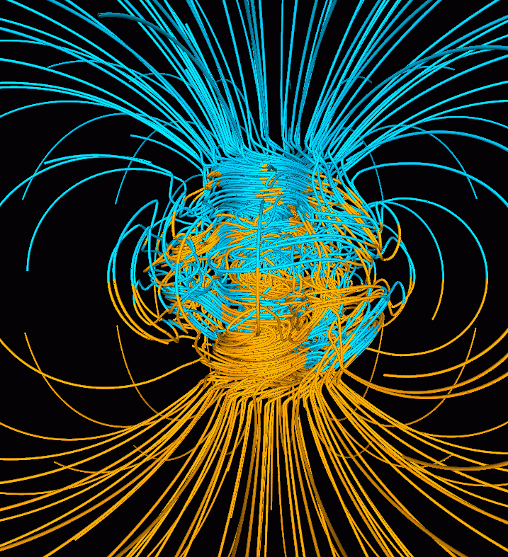

1. Magnetic Data - Background¶
This page will provide some basic background information on magnetism and magnetic data, concepts that must be broadly understood before embarking on interpretation or modelling of magnetic data.
The material presented here are extracted from UBC-GIF’s Geophysics for Practicing Geoscientists (GPG) Website. It provides a summary of the fundamentals of magnetic data and modelling, including information on Earth’s magnetic field, magnetic induction, and magnetic remanence. More detailed reviews on these topics can be found on the GPG website. Follow the embedded links in each section for expanded discussions.
Measurements of the magnetic field contain information about subsurface variations in magnetic susceptibility. Data can be acquired in the air (planes, satellites), on the ground (stationary, moving platforms, marine) and underground (boreholes, tunnels). The measurements record the sum of Earth’s field and fields induced in magnetic materials. More magnetic (i.e. susceptible) materials have stronger induced fields. Removing Earth’s field from the observations yields anomalous fields that can be interpreted in terms of where magnetic material lies and also its susceptiblity and shape. Processed data are presented as maps or profiles, and advanced processing such as inversion can provide 3D models of subsurface magnetic susceptibility distributions.

Magnetic Susceptibility of Rocks and Minerals¶
From the GPG magnetic susceptibility page
Interpretation of magnetic data cannot be successful without an understanding of the magnetic susceptibility of the rock types common within a given project area. Ideally, a suite of rock samples from the project area are collected and susceptibility measured to provide confidence in interpretations of the magnetic data and related models.
Magnetic susceptibility (\(\kappa\)) quantifies the magnetization (\(\vec M\)) a rock or mineral experiences when it is subjected to an applied magnetic field (\(\vec H\)). This relationship takes the form:
The SI unit is the current preferred unit of measurement for susceptibility among most geophysicists, but you will find cgs (centimeter, grams, seconds) units used in older references and texts. This can cause great confusion so be careful! The conversion is:
Magnetic Minerals
The magnetic susceptibility of a rock depends on the type and abundance of magnetic minerals it contains. Magnetic minerals are generally part of the iron-titanium-oxide or iron-sulphide mineral groups. The most important magnetic mineral in rock magnetism is magnetite. This mineral is common in igneous and metamorphic rocks, and is present at least in trace amounts in most sediments. Ore-bearing sulphides can be susceptible if the monoclinic form of pyrrhotite is present.
Susceptibility of Common Rocks
A chart showing the range of magnetic susceptibility values for common rock types are shown below. Note that the scale is logarithmic, indicating a large variability in magnetic susceptibility among rocks.

(adapted from [CE91])
The very large range in mag sus per rock type means that magnetic susceptibility values cannot be assumed based on lithology, which is why collecting and measuring mag sus data from representative field samples is so important.
other references:
Earth’s Magnetic Field¶
From the GPG section on Earth’s magnetic field.
{kind=link}
All magnetic fields arise from currents. This is also true for the magnetic field of the earth. The outer core of the earth is molten and in a state of convection and a geomagnetic dynamo creates magnetic fields. Close to the surface of the core the magnetic fields are very complicated but as we move outward the magnetic field resembles that of a large bar magnetic which is often referred to as a magnetic dipole.

To a first approximation, Earth’s magnetic field resembles a large dipolar source with a negative pole in the northern hemisphere and a positive pole in the southern hemisphere. The dipole is offset from the center of the earth and also tilted. The north magnetic pole at the surface of the earth is approximately at Melville Island.
{kind=link}
The field at any location on (or above or within) the Earth are generally described in terms described of magnitude (\(\mathbf{|B|}\)), declination (\(\mathbf{D}\)) and inclination (\(\mathbf{I}\)) as illustrated in the above figure
\(\mathbf{|B|}\): The magnitude of the vector representing Earth’s magnetic field.
\(\mathbf{D}\): Declination is the angle that H makes with respect to geographic north (positive angle clockwise).
\(\mathbf{I}\): Inclination is the angle between B and the horizontal. It can vary between -90° and +90° (positive angle down).
Earth’s field at any location is approximately that provided by a global reference model called the IGRF or International Geomagnetic Reference Field. The IGRF is a mathematical model that describes the field and its secular changes, that is, how it changes with time. The IGRF is a product of the International Association of Geomagnetism and Aeronomy (IAGA), and the original version was defined in 1968. It is updated every five years, and later versions may re-define the field at earlier times. This is important to remember if you are comparing old maps to new ones. Earth’s field has a strength of approximately 70,000 nanoTeslas (nT) at the magnetic poles and approximately 25,000 nT at the magnetic equator. Field orientation and strength varies around the world.
{kind=link}
Slow changes in the exact location of the magnetic north pole occur over long periods (months-years). These changes are thought to be caused by internal changes in mantle convection. Knowing the acquisition date of a magnetic survey is important in order to understand the observed magnetic anomalies.
Details about Earth’s field can be found at government geoscience websites such as the NOAA geomagnetism home page, or the Canadian National Geomagnetism Program home page. An overview of Earth’s magnetic field (with good images, graphs, etc.) can be found on the British Geological Survey’s geomagnetics website.
Magnetization¶
From the GPG section on magnetization
When the source field is applied to earth materials it causes the to become magnetized. Magnetization is the dipole moment per unit volume. This is a vector quantity because a dipole has a strength and a direction. For many cases of interest the relationship between magnetization \(\mathbf{M}\) and the source \(\mathbf{H}\) (earth’s magnetic field) is given by
where \(\kappa\) is the magnetic susceptibility. Thus the magnetization has the same direction as the earth’s field. Because Earth’s field is different at different locations on the earth, then the same object gets magnetized differently depending upon where it is situated.
The final net magnetization of an object, when it is buried at any location on the earth will be the sum of the induced and remanent magnetizations. Remanence is an important topic and it is further investigated here.
Magnetic Response¶
From the GPG section on magnetic response.
The magnetic field that results from the magnetized earth commonly referred to as the “secondary” field or sometimes the “anomalous” field. For geological or engineering problems, these anomalous fields are the data to be interpreted, and this is what we seek to measure. Unfortunately, for a field survey we measure the anomalous field plus Earth’s field. (More correctly it is the anomalous field plus any other magnetic fields that are present, but we ignore that complexity for the present). Thus the observed field is:
where \(\mathbf{B}^{obs}\) is the combined signal from the Earth’s field \(\mathbf{B}_0\) and from the ground \(\mathbf{B}_A\).
The basic ideas behind the induced magnetization process, going from source to data, are illustrated below.
Magnetic Remanence¶
From the GPG section on magnetic remanence.
A toy bar magnet is a quintessential example of an object that has a remanent magnetization. If taken to outer space where there is no inducing field, it still possesses a magnetic field like that of a dipole. The acquisition of remanence occurs when a body with magnetic minerals cools through its Curie temperature. Above the Curie temperature thermal agitation prevents the elementary dipoles from aligning with the ambient magnetic field. As the material cools the magnetic particles can stay aligned and eventually lock into place in a domain structure. Each domain has all of its constituent dipoles locked into a single direction. This structure stays in place after the ambient field is removed and the object will have a net remanent magnetism. Some elements of the process are portrayed in the figure below:
{kind=link}
Magnetization is thus composed of two parts: (a) An induced portion (\(\mathbf{M_I}\)) and (b) remanent portion (\(\mathbf{M_R}\)). The net magnetization is:
Note that the remanent component is independent of the inducing direction and it can substantially distort the magnetic data compared to the purely induced response. Interpreting magnetic data affected by remanence remains a key challenge in exploration geophysics.
Data Processing¶
Prior to interpretation, magnetic data may have several corrections applied. In most cases, these processing steps are completed by the geophysical data acquisition team, providing both the raw and processed data as a final product, however some may need to be applied by the geoscientist working with the data. Some of these corrections are listed below:
{kind=link}
{kind=link}